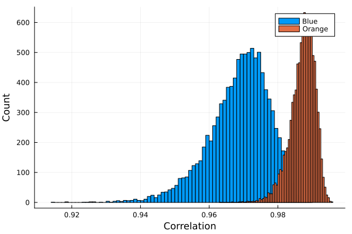
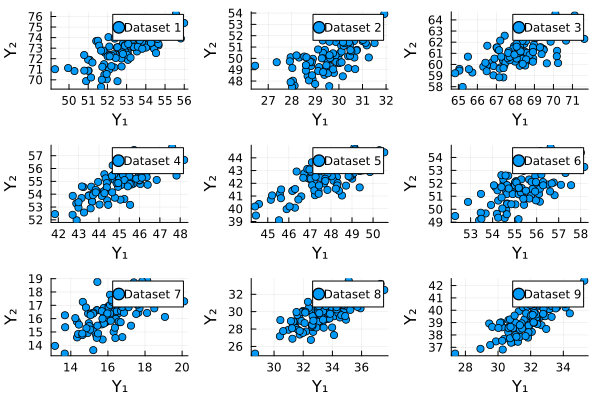

using Pkg
Pkg.activate("hw7")
using Distributions
using DataFrames
using Turing
using Plots
using DelimitedFiles
using LinearAlgebra
using Statistics
using Turing Activating project at `~/Documents/GitHub/STAT638_Applied-Bayes-Methods/hw/hw7`Read Chapter 7 in Hoff. Then, do the following exercises: 7.1, 7.3, 7.4.
Problem 7.1 considers the standard/joint Jeffreys prior (as opposed to the independent Jeffreys prior considered on the lecture slides). You may find the following hints useful:
- You can write \(y_i-\theta\) as \((y_i - \bar{y}) + (\bar{y}-\theta)\) and expand the quadratic form in the exponent in the multivariate normal likelihood accordingly.
- \(\sum_{i} b^{T}_{i} Ac = c^T A(\Sigma_{i} b_i)\)
- Brute-force integration can sometimes be avoided if the integrand is proportional to a known density (e.g., multivariate normal), as any density integrates to 1 and the normalizing constant is known for known densities. For 7.3, note that the
rWishart()function in R returns a three-dimensional array, so we have to index the array as [,,1] to get to the actual matrix located within the array.
using Pkg
Pkg.activate("hw7")
using Distributions
using DataFrames
using Turing
using Plots
using DelimitedFiles
using LinearAlgebra
using Statistics
using Turing Activating project at `~/Documents/GitHub/STAT638_Applied-Bayes-Methods/hw/hw7`Pkg.status()
VERSIONStatus `~/Documents/GitHub/STAT638_Applied-Bayes-Methods/hw/hw7/Project.toml`
⌃ [a93c6f00] DataFrames v1.4.2
⌃ [31c24e10] Distributions v0.25.76
⌃ [91a5bcdd] Plots v1.35.5
⌃ [fce5fe82] Turing v0.21.12
[8bb1440f] DelimitedFiles
Info Packages marked with ⌃ have new versions available and may be upgradable.v"1.8.2"Jeffrey’s prior: For the multivariate normal model, Jeffreys’ rule for generating a prior distribution on \((\theta, \Sigma)\) gives \(p_J(\theta, \Sigma) \propto |\Sigma|^{-(p+2)/2}\).
Explain why the function \(p_J\) cannot actually be a probability density for \((\theta, \Sigma)\).
The density is independent of \(\theta\). The integration can be infinity and beyond \(1\).
Let \(p_J(\theta, \Sigma|y_1, \dots, y_n)\) be the probability density that is proportional to \(p_J(\theta, \Sigma)\times p(y_1,\dots, y_n|\theta, \Sigma)\). Obtain the form of \(p_J(\theta, \Sigma|y_1, \dots, y_n)\), \(p_J(\theta|\Sigma, y_1, \dots, y_n)\) and \(p_J(\Sigma|y_1, \dots, y_n)\).
\[\begin{align} p_{J}(\theta, \Sigma | y_1, \dots, y_n)% &\propto p_J(\theta, \Sigma) \times p(y_1, \dots, y_n | \theta, \Sigma)\\ &\propto |\Sigma|^{-\frac{p+2}{2}} \times \left[|\Sigma|^{-\frac{n}{2}} \exp\left(-tr(S_{\theta}\Sigma^{-1})\right)\right /2]\\ &\propto |\Sigma|^{-\frac{p+n+2}{2}}\exp\left( -tr(S_{\theta}\Sigma^{-1})/2 \right) \end{align}\]
\[\begin{align} p_J(\theta | \Sigma, y_1, \dots, y_n)% &\propto \exp\left[ - \sum^{n}_{i=1} (y_i - \theta)^T \Sigma^{-1} (y_i - \theta)/2 \right]\\ &\propto \exp \left[ -n(\bar{y} - \theta)^T \Sigma^{-1} (\bar{y}-\theta)/2 \right]\\ &\propto Normal(\theta; \bar{y},\frac{\Sigma}{n}) \end{align}\]
\[\begin{align} p_{J}(\Sigma | y_1, \dots, y_n, \theta)% &\propto |\Sigma|^{-\frac{p+n+2}{2}}\exp\left( -tr(S_\theta \Sigma^{-1})/2 \right)\\ &\propto inverse-Wishart(\Sigma; n+1, S_{\theta}^{-1} ) \end{align}\]
Australian crab data: The files
bluecrab.datandorangecrab.datcontain measurements of body depth (\(Y_1\)) and rear width (\(Y_2\)), in millimeters, made on \(50\) male crabs from each of two species, blud and orange. We will model these data using a bivariate normal distribution.
dblue = readdlm("data/bluecrab.dat")
doran = readdlm("data/orangecrab.dat");For each of the two species, obtain posterior distributions of the population mean \(\theta\) and covariance matrix \(\Sigma\) as follows: Using the semiconjugate prior distributions for \(\theta\) and \(\Sigma\), set \(\mu_0\) equal to the sample mean of the data, \(\Lambda_0\) and \(S_0\) equal to the sample covariance matrix and \(\nu_0 =4\). Obtain \(10000\) posterior samples of \(\theta\) and \(\Sigma\). Note that this prior distribution lossely centers the parameters around empirical estimates based on the observed data (and is very similar to the unit information prior described in the previous exericise). It cannot be consitered as our true prior distribution, as it was derived from the observed data. However, it can roughly considered as the prior distribution of someone with weak but unbiased information.
S = 10000
function sampling(crab)
n, p = size(crab)
μ₀ = transpose(mean(crab, dims=1))
Λ₀ = S₀= cov(crab)
ν₀ = 4
θs = zeros(S, p)
Σs = zeros(S, p, p);
# Gibbs sampling
for s in 1:S
# update θ
Λₙ = inv(inv(Λ₀) + n*inv(S₀))
μₙ = Λₙ * (inv(Λ₀)*μ₀ + n*inv(S₀)*μ₀)
θ = rand(MvNormal( vec(μₙ), Λₙ))
# update Σ
res = crab .- reshape(θ, 1, p)
Sₜₕ = transpose(res) * res
Sₙ = S₀ + Sₜₕ
Σ = rand(InverseWishart(ν₀ + n, Sₙ))
# Store data
θs[s,:] = θ
Σs[s,:, :] = Σ
end
return θs, Σs
end
θbs, Σbs = sampling(dblue)
θos, Σos = sampling(doran);Plot values of \(\theta=(\theta_1, \theta_2)'\) for each group and compare. Describe any size differences between the two groups.
The blue crab has larger variance and lower means of \(\theta_1\) and \(\theta_2\) than orange one.
plot
pb = scatter(θbs[:,1], θbs[:,2], label="Blue")
po = scatter(θos[:,1], θos[:,2], label="Orange")
μθb = mean(θbs, dims=1)
μθo = mean(θos, dims=1)
scatter!(pb, [μθb[1]], [μθb[2]], label="mean $(round.(μθb; digits = 1))))", markersize = 10)
scatter!(po, [μθo[1]], [μθo[2]], label="mean $(round.(μθo; digits = 1))", markersize = 10)
plot(pb, po, layout = (1, 2), xlabel="θ₁", ylabel="θ₂")
mean(θos[:,1] .> θbs[:,1])0.8927mean(θos[:,2] .> θbs[:,2])0.9983From each covariance matrix obtained from the Gibbs sampler, obtain the corresponding correlation coefficient. From these values, plot posterior densities of the correlations \(\rho_{\text{blue}}\) and \(\rho_{\text{orange}}\) for the two groups. Evaluate differences between the two species by comparing these posterior distributions. In particular, obtain an approximation to \(Pr(\rho_{\text{blue}} < \rho_{\text{orange}} | y_{\text{blue}}, y_{\text{orange}})\). What do the results suggest about differences between the two populations?
correlation(covmat) = covmat[1,2] / sqrt(covmat[1,1] * covmat[2,2])
corrbs = [correlation(Σbs[i,:,:]) for i in 1:S]
corros = [correlation(Σos[i,:,:]) for i in 1:S];
h = histogram(corrbs, label="Blue", xlabel="Correlation")
histogram!(h, corros, label="Orange", ylabel="Count")
\(Pr(\rho_{\text{blue}} < \rho_{\text{orange}} | y_{\text{blue}}, y_{\text{orange}})\) is
mean(corrbs .< corros)0.9876Marriage data: The file
agehw.datcontains data on the ages of \(100\) married couples sampled from the U.S. population.
dagew = readdlm("data/agehw.dat")[2:end, :]
size(dagew)(100, 2)Before you look at the data, use your own knowledge to formulate a semiconjugate prior distribution for \(\theta=(\theta_h, \theta_w)^T\) and \(\Sigma\), where \(\theta_h\), \(\theta_w\) are mean husband and wife ages, and \(\Sigma\) is the covariance matrix.
n, p = size(dagew);
μ₀ = ones(p,1) .* transpose(mean(dagew, dims=1))
Λ₀ = S₀ = [ 169 118.3 ; 118.3 169]
ν₀ = p + 2;Generate a prior predictive dataset of size \(n=100\), by sampling \((\theta, \Sigma)\) from your prior distribution and then simulating \(Y_1, \dots, Y_n \sim i.i.d.\) multivariate normal \((\theta, \Sigma)\). Generate several such datasets, make bivariate scatterplots for each dataset, and make sure they roughly represent your prior beliefs about what such a dataset would actually look like. If your prior predictive datasets do not confirm to your beliefs, go back to part (a) and formulate a new prior. Report the prior that you eventually decide upon, and provide scatterplots for at least three prior predictive datasets.
Choose
\(p = 2\), and Λ₀ = S₀ = [ 169 118.3 ; 118.3 169]
N = 100
S = 9
Ypreds = zeros(S, p, N)
for i in 1:S
θ = rand(MvNormal( vec(μ₀), Λ₀))
Σ = rand(InverseWishart(ν₀ + n, S₀))
Ypreds[i,:, :] = rand(MvNormal(θ, Σ), N)
end
pvers = [plot() for i in 1:S]
for i in 1:S
scatter!(pvers[i], Ypreds[i, 1, :], Ypreds[i, 2, :], label="Dataset $i")
end
plot(pvers..., layout = (3, 3), xlabel="Y₁", ylabel="Y₂")
Using your prior distribution and the \(100\) values in the dataset, obtain an MCMC approximation to \(p(\theta, \Sigma|y_1, \dots, y_{100})\). Plot the joint posterior distribution of \(\theta_h\) and \(\theta_w\), and also the marginal posterior density of the correlation between Y_h and Y_w, the ages of a husband and wife. Obtain \(95\%\) posterior confidence intervals for \(\theta_h\), \(\theta_w\) and the correlation coefficient.
S = 10000
function mcmc(data, μ₀, Λ₀, S₀, ν₀)
yₙ = mean(data, dims=1)
n, p = size(data)
θs = zeros(S, p)
Σs = zeros(S, p, p)
Σ = cov(data)
for i in 1:S
#update θ
Λₙ = inv(inv(Λ₀) + n * inv(Σ))
Λₙ[1,2] = Λₙ[2,1]
μₙ = Λₙ * (inv(Λ₀)*μ₀ + n*inv(Σ) * transpose(yₙ))
θ = rand(MvNormal( vec(μₙ), Λₙ))
#update Σ
res = data .- reshape(θ, 1, p)
Sₜₕ = transpose(res) * res
Sₙ = S₀ + Sₜₕ
Σ = rand(InverseWishart(ν₀ + n, Sₙ))
# Store data
θs[i,:] = θ
Σs[i,:, :] = Σ
end
return θs, Σs
end
θs, Σs = mcmc(dagew, μ₀, Λ₀, S₀, ν₀);
corrs = [correlation(Σs[i,:,:]) for i in 1:S];Husband Quantiles
quantile(θs[:,1], [0.025, 0.5, 0.975])3-element Vector{Float64}:
41.71712706938635
44.39676744614884
47.09431425711537Wife Quantiles
quantile(θs[:,2], [0.025, 0.5, 0.975])3-element Vector{Float64}:
38.41939096164427
40.87349736587568
43.418570387079846Correlation Quantiles
quantile(corrs, [0.025, 0.5, 0.975])3-element Vector{Float64}:
0.8598526557581118
0.9028287252227811
0.9325781232590956Obtain \(95\%\) posterior confidence intervals for \(\theta_h\), \(\theta_{\omega}\) and the correlation coefficient using the following prior distributions:
- Jeffrey’s prior, described in Exercise 7.1;
- The unit information prior, described in Exercise 7.2;
- A “diffuse prior” with \(\mu_0=0, \Lambda_0 = 10^5 \times I, S_0 = 1000\times I\) and \(v_0 =3\).
θs, Σs = mcmc(dagew, μ₀, cov(dagew), cov(dagew), size(dagew)[1]+1);
corrs = [correlation(Σs[i,:,:]) for i in 1:S];Husband Quantiles
quantile(θs[:,1], [0.025, 0.5, 0.975])3-element Vector{Float64}:
42.52441579546774
44.418141464043245
46.33805864696494Wife Quantiles
quantile(θs[:,2], [0.025, 0.5, 0.975])3-element Vector{Float64}:
39.08757959835684
40.86391657673728
42.72108377734497Correlation Quantiles
quantile(corrs, [0.025, 0.5, 0.975])3-element Vector{Float64}:
0.8756579285507731
0.9039189535126206
0.9263941065474931θs, Σs = mcmc(dagew, transpose(mean(dagew, dims=1)), cov(dagew)/100., cov(dagew)/100., 2. + 1.);
corrs = [correlation(Σs[i,:,:]) for i in 1:S];Husband Quantiles
quantile(θs[:,1], [0.025, 0.5, 0.975])3-element Vector{Float64}:
42.50529893890636
44.42248855701973
46.29402259410223Wife Quantiles
quantile(θs[:,2], [0.025, 0.5, 0.975])3-element Vector{Float64}:
39.082198908879754
40.87726763238499
42.65717356460964Correlation Quantiles
quantile(corrs, [0.025, 0.5, 0.975])3-element Vector{Float64}:
0.8630261005470224
0.904563195139358
0.9341516213080364θs, Σs = mcmc(dagew, [0;0], [10^5 0; 0 10^5], [10^3 0; 0 10^3], 3);
corrs = [correlation(Σs[i,:,:]) for i in 1:S];Husband Quantiles
quantile(θs[:,1], [0.025, 0.5, 0.975])3-element Vector{Float64}:
41.692569822172345
44.4194659798749
47.209907857971324Wife Quantiles
quantile(θs[:,2], [0.025, 0.5, 0.975])3-element Vector{Float64}:
38.263899627117944
40.879785191881425
43.48074886203784Correlation Quantiles
quantile(corrs, [0.025, 0.5, 0.975])3-element Vector{Float64}:
0.792709080928878
0.8543476559888816
0.89959452338722Compare the confidence intervals from (d) to those obtained in (c). Discuss whether or not you think that your prior information is helpful in estimating \(\theta\) and \(\Sigma\), or if you think one of the alternatives in (d) is preferable. What about if the sample size were much smaller, say \(n=25\)?
The prior information does not matter because the sample size is large. No matter how prior is setup, the posterior distribution is similar. However, for smaller sample size, those approaches may differ.
μ₀ = [50.; 50.]
Λ₀ = S₀ = [ 169 118.3 ; 118.3 169]
ν₀ = p + 2+9;
θs, Σs = mcmc(dagew, μ₀, Λ₀, S₀, ν₀)([45.03212480248956 42.158942566022134; 44.19289889461345 39.913719022014824; … ; 43.118960131235504 39.85494130735777; 45.851070752555195 41.90866145945041], [160.05480435947902 134.01263101431502; 167.62930621107768 139.72641493969817; … ; 192.31055286979574 154.84156304833144; 223.28476886238866 181.61583904818187;;; 134.01263101431502 142.01458641718997; 139.72641493969817 147.83068828095497; … ; 154.84156304833144 150.27190716256538; 181.61583904818187 173.36910592951546])Husband Quantiles
quantile(θs[:,1], [0.025, 0.5, 0.975])3-element Vector{Float64}:
41.92193411691592
44.46735932525378
47.04949177514974Wife Quantiles
quantile(θs[:,2], [0.025, 0.5, 0.975])3-element Vector{Float64}:
38.56649700730234
40.95246209220502
43.35536857557841Correlation Quantiles
quantile(corrs, [0.025, 0.5, 0.975])3-element Vector{Float64}:
0.792709080928878
0.8543476559888816
0.89959452338722